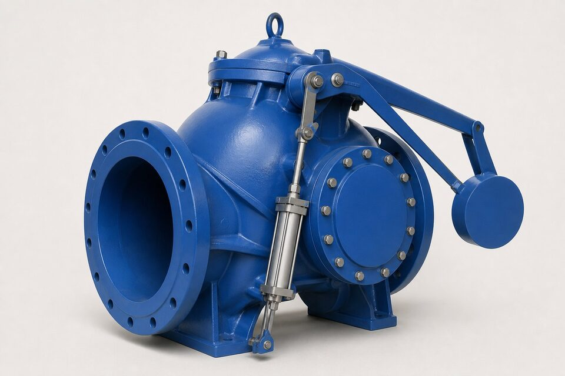

دیسک کج چیست؟
شیر یکطرفه دیسک کج عضو پیشرفته خانواده سوئینگ است: دیسک روی محوری مایل نصب شده که مسیر باز و بسته شدن را کوتاهتر از سوئینگ معمولی میکند. در طرف بیرونی، یک وزنه بازوی دیسک را به سمت بسته شدن هل میدهد و یک دمپر هیدرولیکی، سرعت این بسته شدن را کنترل مینماید. نتیجه شیری است که هم افت فشار کمی در حالت باز دارد و هم در لحظه توقف پمپ، پیش از معکوس شدن کامل جریان بسته میشود؛ ترکیبی که آن را برای خطوط بزرگ انتقال ایدهآل میکند.

مهار ضربه قوچ در خطوط بزرگ
در ایستگاههای پمپاژ بزرگ، توقف پمپ موج فشاری ایجاد میکند که میتواند به لوله، اتصالات و خود پمپ آسیب بزند. شدت این موج به سرعت بسته شدن شیر یکطرفه وابسته است: بسته شدن خیلی دیر، برخورد ستون معکوس با دیسک و بسته شدن خیلی سریع، قطع ناگهانی جریان و موج منفی ایجاد میکند. دیسک کج با دمپر قابل تنظیم، امکان پیدا کردن نقطه بهینه را میدهد: دیسک با جریان رو به جلو باز میماند، با کاهش جریان شروع به بسته شدن میکند و در فاز پایانی با سرعت کنترلشده مینشیند. این رفتار، ضربه قوچ را به حداقل میرساند.
مقایسه با طرحهای دیگر
| معیار | دیسک کج | سوئینگ ساده | دوپلیت | نازل چک |
|---|---|---|---|---|
| سایز رایج | بزرگ و خیلی بزرگ | متوسط تا بزرگ | کوچک تا بزرگ | کوچک تا متوسط |
| کنترل بسته شدن | دمپر و وزنه | خیر | فنر | فنر |
| افت فشار در حالت باز | کم | بسیار کم | کم | کم |
| هزینه نسبی | بالا | متوسط | متوسط | متوسط تا بالا |
| نگهداری | دمپر و وزنه | کم | کم | کم |
دیسک کج در سایزهای بزرگ، تعادل بین افت فشار و کنترل ضربه قوچ را فراهم میکند.
معیارهای انتخاب
انتخاب دیسک کج معمولاً پس از تحلیل گذرای خط انجام میشود: دبی، هد پمپ، طول و پروفایل خط، سناریوهای توقف و زمان مجاز بسته شدن. بر اساس این دادهها، اندازه وزنه و تنظیم دمپر تعیین میگردد. در بسیاری پروژهها، سازنده با دریافت دادههای پمپاژ، تنظیمات پیشنهادی را ارائه میدهد. متریال بدنه و تریم نیز باید متناسب سیال انتخاب شود؛ در خطوط آب خام، پوششهای داخلی و در خطوط خورنده، متریال مناسب اهمیت دارد. محل نصب و دسترسی برای تنظیم دمپر نیز باید در طراحی دیده شود.
نکات نصب و نگهداری
دمپر هیدرولیکی نیازمند بازرسی دورهای است: سطح روغن، نشتی و عملکرد آن باید در برنامه نگهداری باشد. وزنه و بازو نیز نباید در اثر خوردگی یا آسیب مکانیکی تغییر وضعیت دهند، چون تعادل بسته شدن را به هم میزنند. پس از هر تغییر در شرایط پمپاژ (مانند تعویض پمپ یا تغییر دبی)، تنظیم دمپر باید بازنگری شود. در نصب، جهت جریان و وضعیت افقی خط رعایت گردد و فضای کافی برای دسترسی به دمپر و وزنه در نظر گرفته شود.
عیبیابی و خرابیهای رایج
شیرهای دیسک کج به دلیل کاربرد در خطوط بزرگ و حساس، نیازمند پایش فعالتری نسبت به شیرهای یکطرفه معمولیاند. شایعترین مشکل، بسته نشدن کامل دیسک است که دلایل مختلفی دارد: تجمع رسوب یا ذرات خارجی در مسیر حرکت دیسک، آسیب سطح شیبدار بدنه یا خرابی مکانیزم کمکبستن. علامت آن معمولا صدای لرزش یا ضربه خفیف در دبیهای پایین و در موارد شدید، بازگشت جریان هنگام توقف پمپ است. در شیرهای مجهز به سیستم میرایی هیدرولیکی، نشتی روغن از سیلندر یا تغییر زمان بسته شدن نسبت به مقادیر اولیه، نشانه نیاز به سرویس است. حسگرهای وضعیت دیسک نیز باید دورهای تست شوند، چون سیگنال اشتباه آنها میتواند تصویر نادرستی از وضعیت خط به اتاق کنترل بفرستد. توصیه عملی این است که زمان بسته شدن شیر در هر بازرسی ثبت و با مقدار اولیه مقایسه شود؛ تغییر تدریجی این زمان، بهترین شاخص زودهنگام فرسودگی مکانیزم است.
جمعبندی
دیسک کج پاسخ مهندسی به ضربه قوچ در خطوط بزرگ است: ترکیب دیسک مایل، وزنه و دمپر قابل تنظیم، بسته شدن را کنترل کرده و از پمپها و خطوط گرانقیمت محافظت میکند. با تحلیل گذرای خط و تنظیم دقیق دمپر، این شیر یکی از مطمئنترین انتخابها برای ایستگاههای پمپاژ بزرگ محسوب میشود.
سوالات رایج
دیسک کج چه تفاوتی با سوئینگ دارد؟
در طرح دیسک کج، محور چرخش دیسک مایل است و مسیر بسته شدن کوتاهتر میشود؛ به همراه وزنه و دمپر، بسته شدن پیش از معکوس شدن کامل جریان کنترل میگردد، در حالی که سوئینگ ساده این قابلیت را ندارد.
کجا به دیسک کج نیاز داریم؟
در خطوط بزرگ انتقال آب و سیال، به ویژه در دیسچارج پمپهای بزرگ که ضربه قوچ میتواند به خط و ایستگاه آسیب بزند.
نقش دمپر چیست؟
دمپر سرعت بسته شدن دیسک را در فاز پایانی کنترل میکند؛ با تنظیم آن میتوان بین سرعت بسته شدن و شدت ضربه قوچ، نقطه بهینه را برای خط پیدا کرد.
در سایزهای کوچک هم استفاده میشود؟
معمولاً خیر؛ این طرح برای سایزهای بزرگ اقتصادی و فنی معنادار است و در سایزهای کوچک، طرحهای سادهتر مانند دوپلیت یا نازل چک ترجیح داده میشوند.
مطالب مرتبط
- راهنمای جامع شیر یکطرفه
- مقایسه سوئینگ، لیفت و دوپلیت
- شیر یکطرفه نازلی
- راهنمای تست و معیارهای نشتی شیرآلات
با ذکر سایز، کلاس و شرایط پمپاژ، شیر دیسک کج با دمپر قابل تنظیم به همراه مدارک عرضه میشود.
مشاهده صفحه محصول ← ثبت RFQ همین محصولتامین این تجهیزات را به پیشرو تجهیز فرتاک بسپارید
شرکت پیشرو تجهیز فرتاک تامینکننده تخصصی تجهیزات صنعتی برای پروژههای نفت، گاز، پتروشیمی، فولاد و نیروگاهی است. برای دریافت پیشنهاد فنی و قیمت، استعلام (RFQ) خود را ثبت کنید تا کارشناسان مهندسی فروش در کوتاهترین زمان پاسخ دهند.
- تامین شیرآلات صنعتیخانواده کامل شیر با گواهی مواد و تست
- تامین تجهیزات صنایع نفت و گازپکیج مواد مطابق وندورلیست